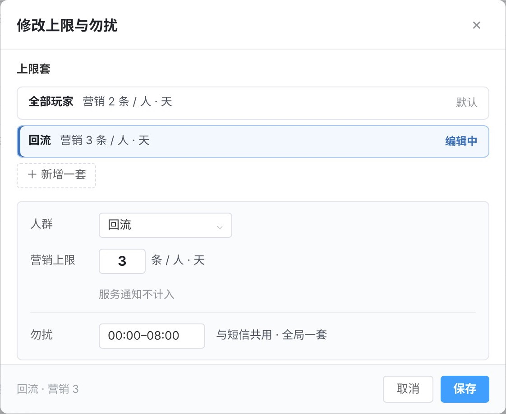
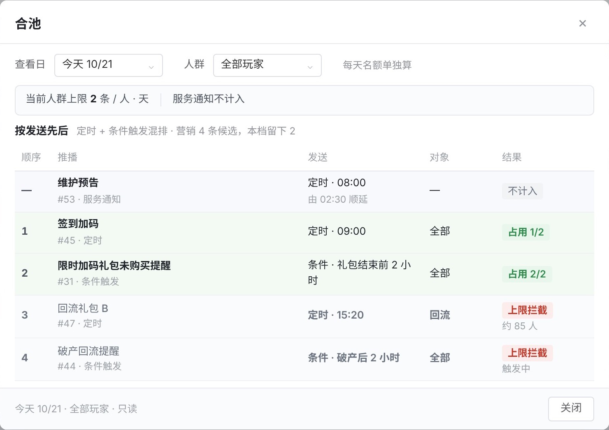
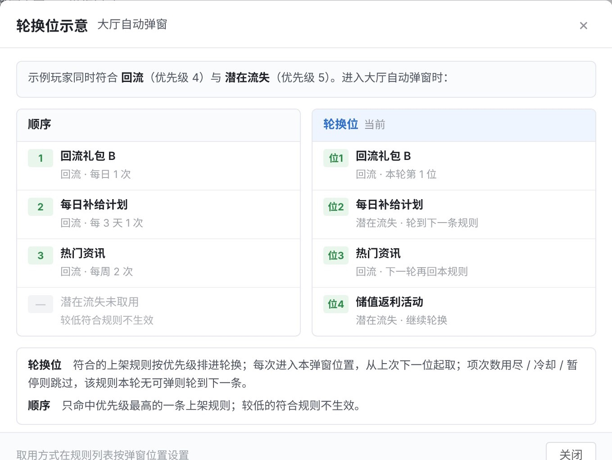
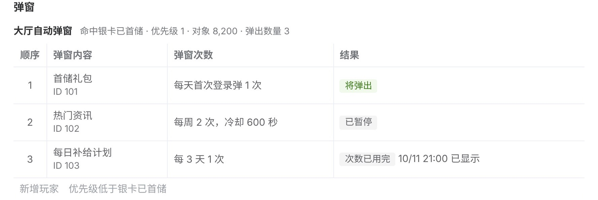
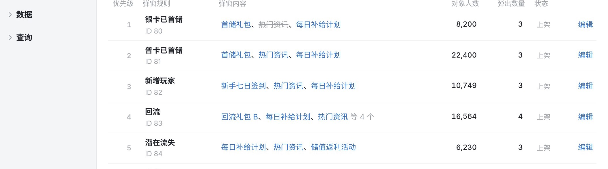
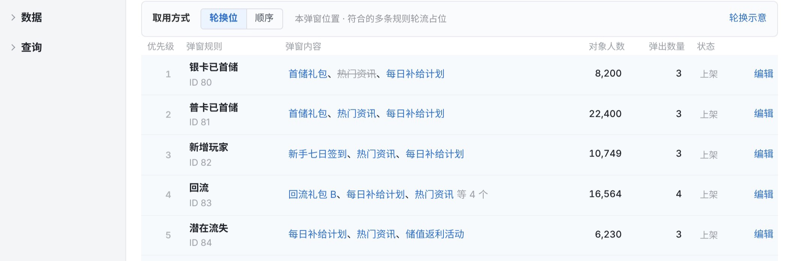

其余 8 页与 10/23 版文字相同。12 处问题的改法我来定；要你回答 1 件：第 6–8 版是在哪个会话改的，我好在它的源文件上接着改。
第 6–8 版的改动不在仓库任何分支上：仓库 6 个分支最新到 10/23，对应第 5 版。
1一位玩家同时符合两套上限时用哪一套，没写

第 1 页「修改上限与勿扰」
2示例数字是加多套上限之前算的：#47 按新规则能发出，却写「上限拦截 约 85 人」

第 1 页「合池」：#47 对象为回流，仍写上限拦截
3「轮换位」的示意图和规则文字写的是两种做法

第 4 页「轮换位示意」
4轮换后，同一个弹窗内容在多条规则里会重复计次
5玩家查询还按「顺序」画，和弹窗页大厅设的「轮换位」矛盾

第 10 页「玩家查询」弹窗一段
| 页 | 现在 | 改法 |
|---|---|---|
| 第 4 页 | 列表首图和「调整优先级」「悬停」「点内容」三张都没有取用方式这一行；下一张又把同一张列表加上这一行画了一遍，看起来像重复。编辑规则页右侧摘要也没显示取用方式，规则写了要显示 | 取用方式画进首图和后面三张，删掉单独那张列表，保留「轮换位示意」；摘要加一行「取用方式 轮换位」 |
| 第 1 页 | 「修改上限与勿扰」里，勿扰画在「回流」套的编辑框里，看起来是回流专属；实际全局一套 | 勿扰移到套列表下方单独一栏 |
| 第 9 页 | 推播分布按 0、1、2 条（到上限）画，回流玩家可收 3 条 | 横轴画到最大一套的条数，「到上限」按每人自己的上限算 |
| 第 3 页 | 短信有没有多套上限、名额占用，没写；只写「算法同推播」 | 写明短信只有一套：每人每天 1 条，不分人群 |
| 第 1、4 页 | 「研发要做的改动」没写新加的两项：按玩家记住每个弹窗位置轮到第几条；按玩家判断适用哪套上限。迁移后各位置默认用哪种取用方式也没写 | 补这两项；迁移后默认「顺序」，与现在的行为相同 |

第 4 页首图：没有取用方式

紧接着的「取用方式」：同一张列表多了一行
| 类别 | 现在 | 改法 |
|---|---|---|
| 叫法 | 「合池」不是通用说法，看名字猜不出是什么；「上限套」「本档」「上限档」三种叫法混用 | 「合池」改「名额占用」；统一叫「上限套」 |
| 和上一版比的话 | 「无时间范围」「不含合池」「两事不放同一界面」「合池不放顶栏」「顶栏只读旁仅「修改」」：没看过上一版的读者不知道为什么要说这些。「本原型演示……」「10/23–10/27 为示例条目」「与「调整优先级」同层，位置级」是绘制说明，开头已写「页面数据均为示例」 | 全部删掉，只写现在是什么 |
卡在哪
这三版不在仓库里，我手上只有你下载的成品，没有截图的源文件；你当时对多套上限、合池、轮换位说的原话我也查不到（本机会话和仓库都搜过）。
答案不同，怎么改
那个会话还在：把这份清单交给它，在它的源文件上改，改完推到仓库。
已经没了：我从 10/23 的分支起，按第 8 版把这两块重做，再改这 12 处，多一轮工作量。
不答会怎样
按「已经没了」处理；第 3 处按推荐写（每次进入轮到一条规则）。
花你多久
一句话：会话名或链接。
原文：~/Downloads/3_原型_需求评审版-8.html（12 MB，含 36 张截图）
本简报的截图：简报/图/2026-10-27_评审版第8版/
本机文件夹停在 10/20，比云端仓库落后 97 个提交；开工前我先同步。